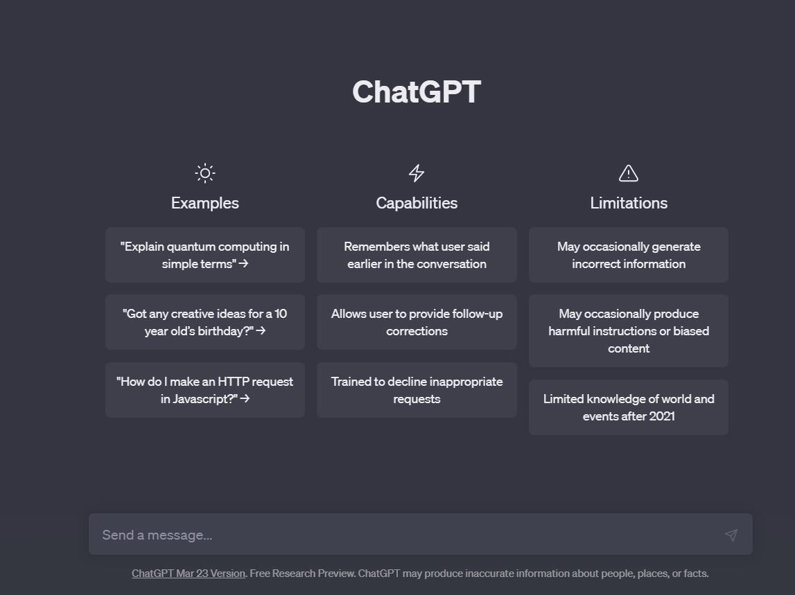
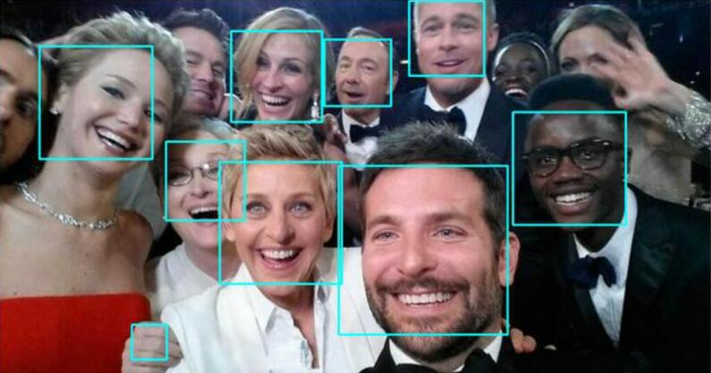

开始之前
你玩过chatGPT吗？ 你用过识图软件吗？ 
你用过语音识别吗？
你用过……
如果答案是肯定的，那么恭喜你，你已经使用了神经网络来方便你的日常生活。
从现在开始，你将会进入一个神奇的世界，学习一种强大的机器学习技术——神经网络。神经网络不仅可以像人脑一样学习、思考、识别，还能够处理复杂的数据和模式，从而实现许多智能化的应用。
在我们的网站上，你将会通过互动式的学习方式，逐步掌握神经网络的基本原理、构造和应用，不断挑战自己的学习和创造能力。帮助你深入了解神经网络的工作方式和原理，
无论你是第一次听说神经网络还是资深的机器学习爱好者，我们都欢迎你加入我们的大家庭，一起探索神经网络的奥妙和潜力，共同追求知识和技能的进步！